Flowers for You
Song for You
A Few Moments
little pieces of us, worth remembering
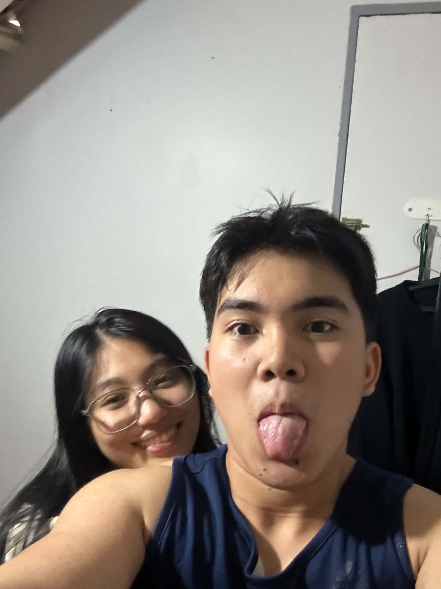
I love your smile.
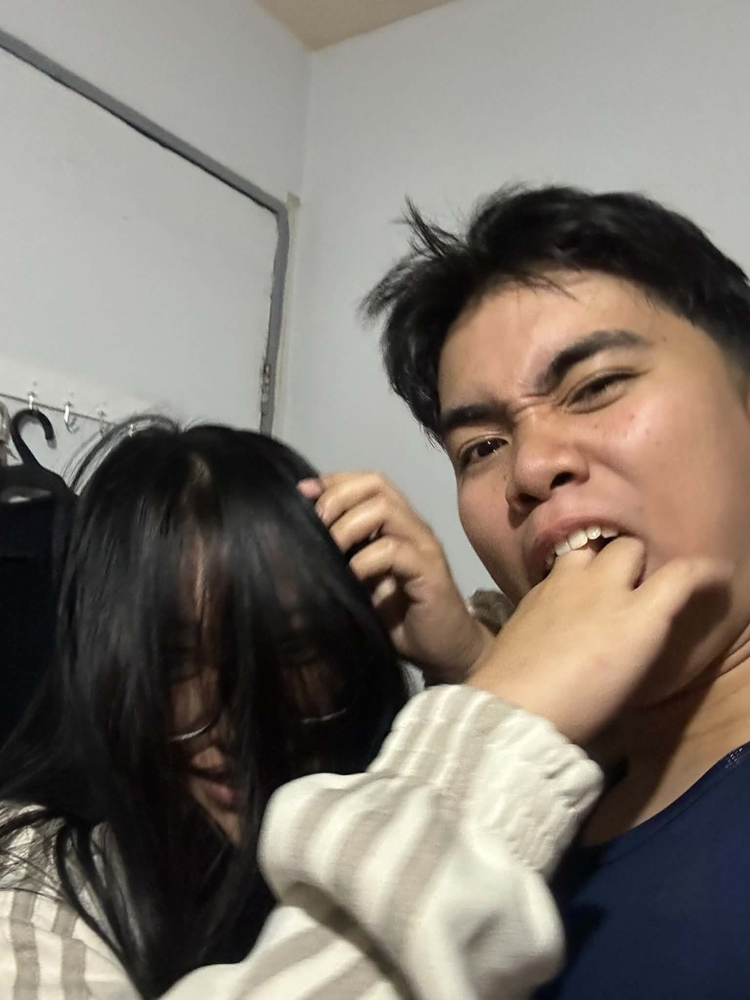
I love you because I can be myself around you.
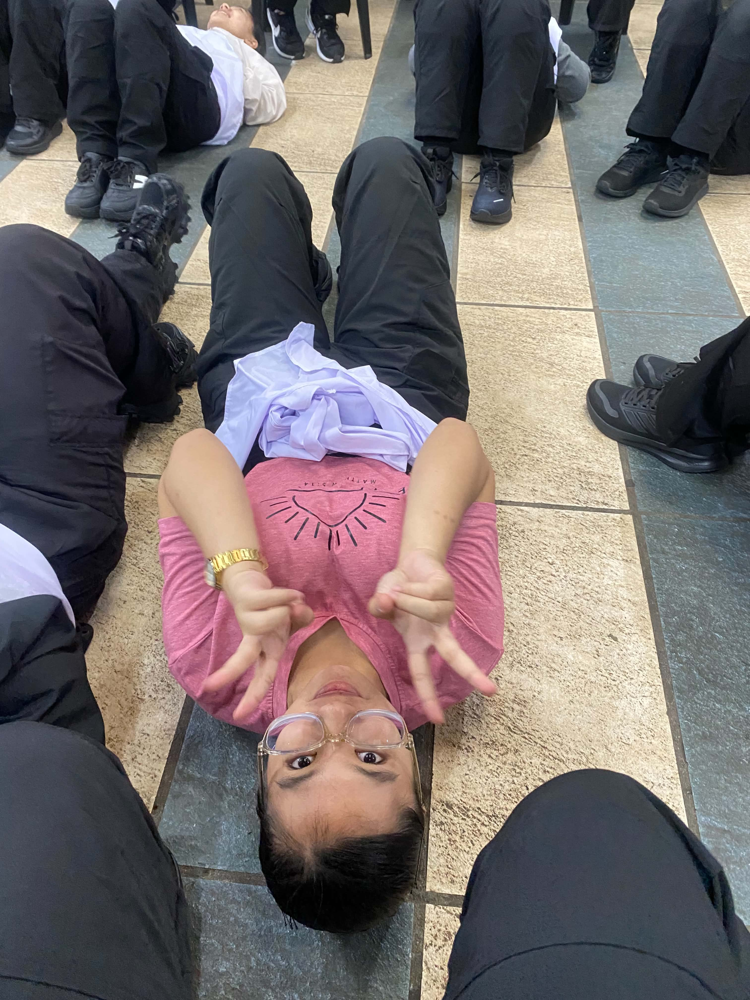
I love your random updates.
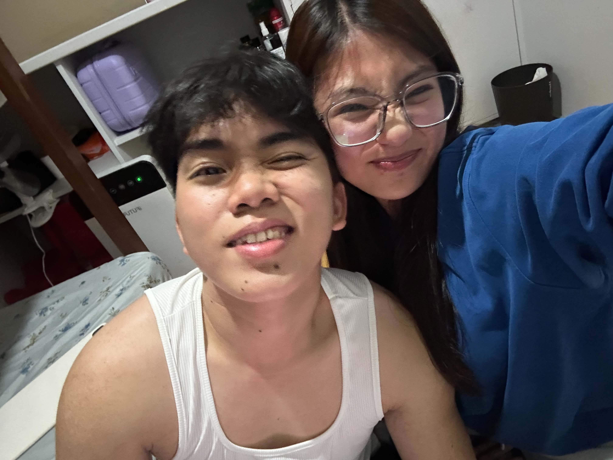
I love your eyes.
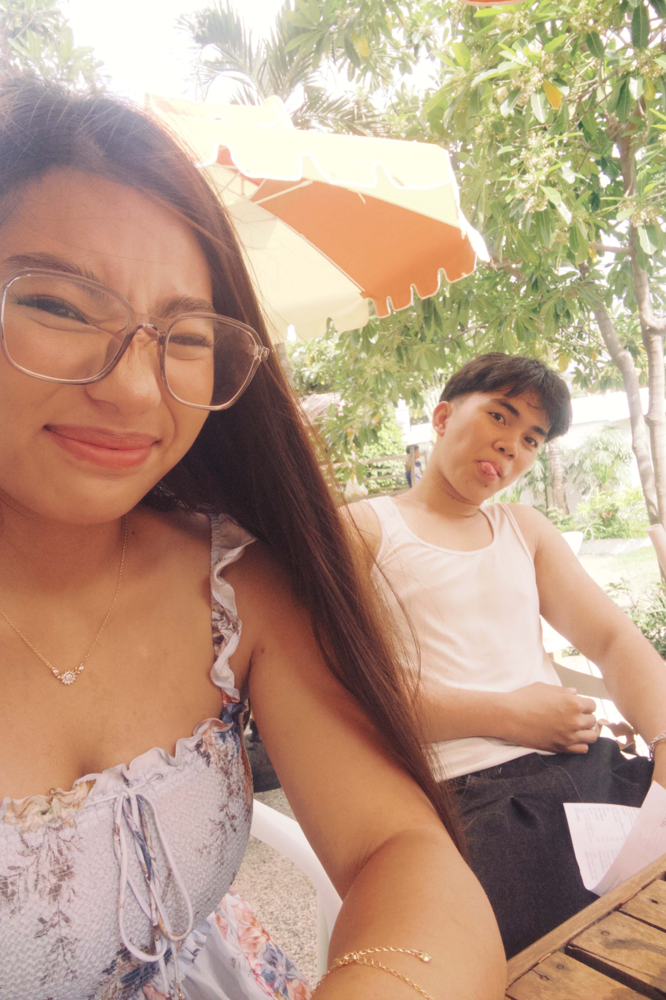
I love your patience with me.
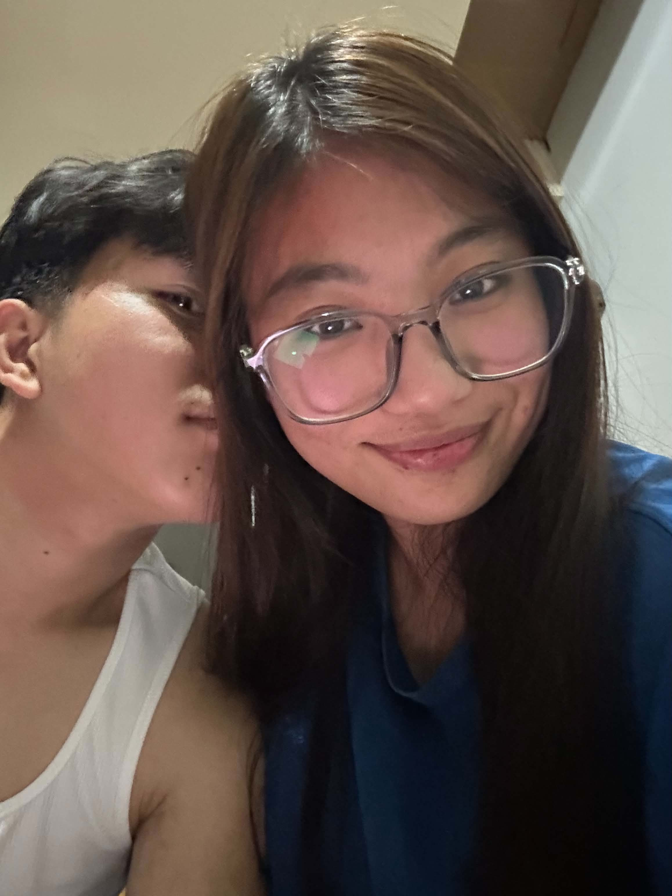
I love your hugs.
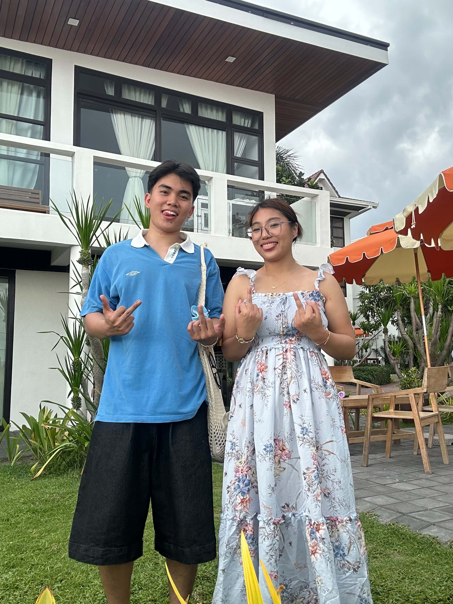
I love your uniqueness.
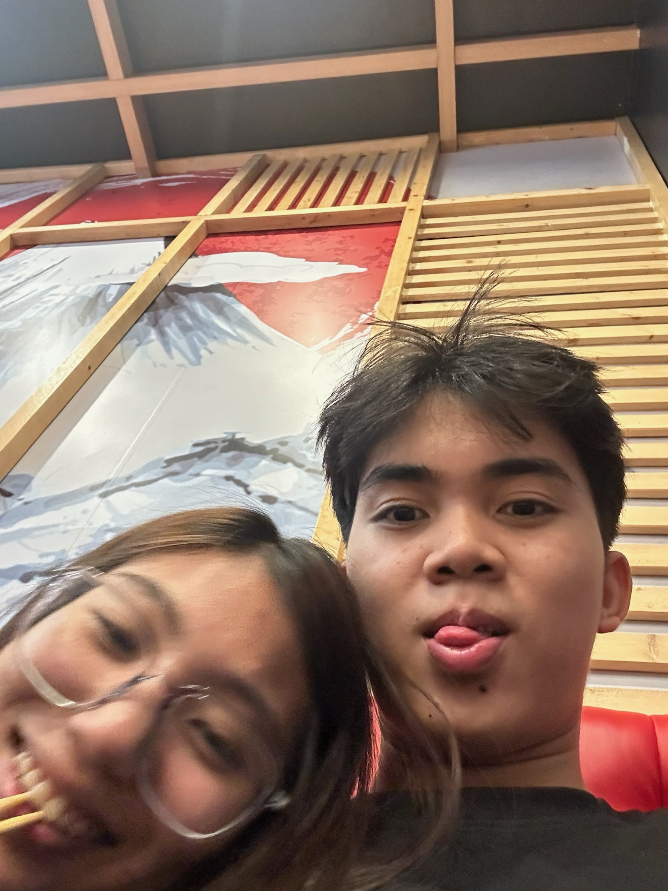
I love your kindness.
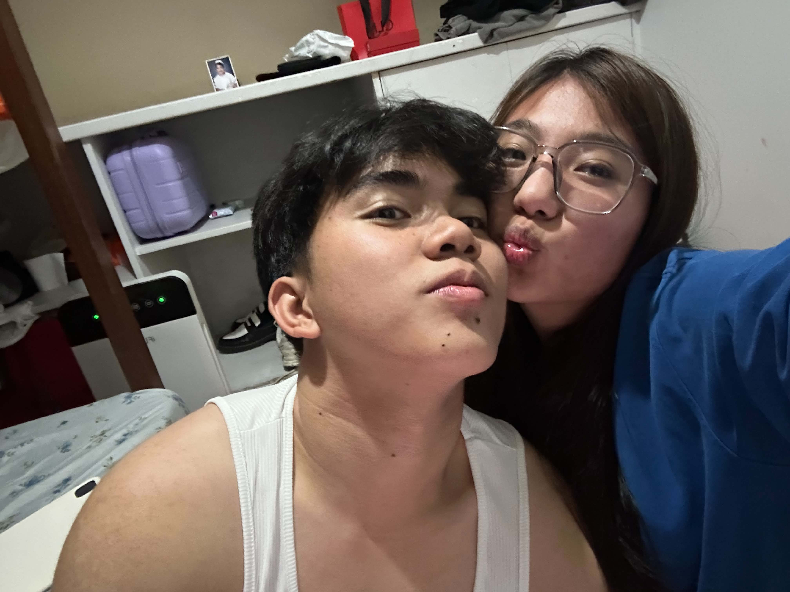
I love your kisses.
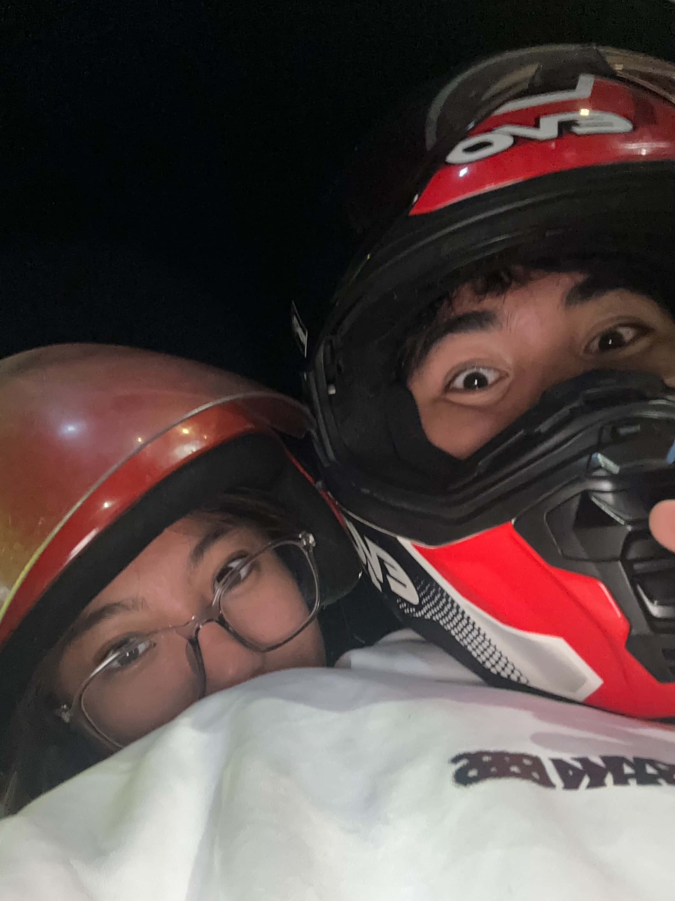
I love your personality.
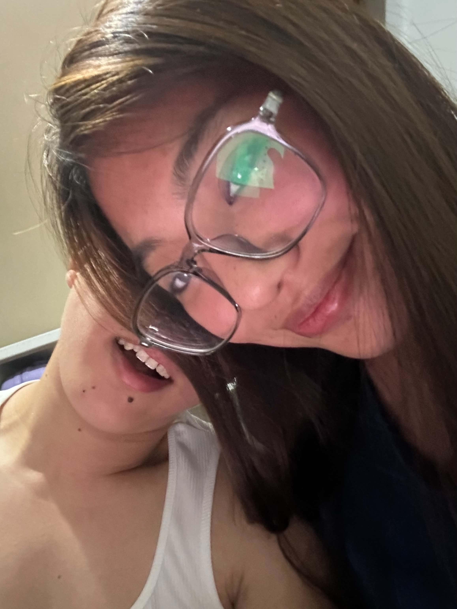
I love you because you are you.
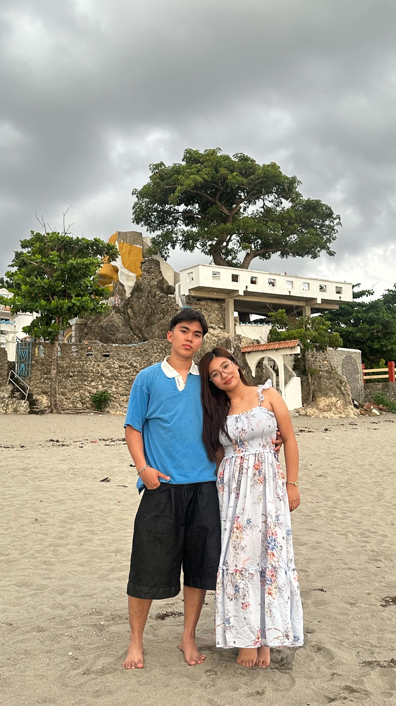
I love the way you became part of my life.
A Few Short Letters
tap the top one
I never told you how much that day meant to me. There are moments I still replay in my head — the small ones, the ones that probably meant nothing to anyone else, but they've stayed with me anyway. I think that's what I miss most: not one big thing, just all the little ones stacked together, one after another, quietly.
Narealize ko, sobrang laki ng jealous/overthink issues ko. like kapag may nakita akong something ioover-analyze ko yon tapos mag overthink ako, maaapektuhan na pakikipag communicate ko at magiging dry/cold response ko sa tao, ewan ko ba, sobrang territorial ko when it comes to that person i love, hindi ko mapigilan hindi magselos hindi sa wala akong tiwala sayo, mayroon pero sa ibang person na nakapaligid sayo wala na hindi ko kilala. pero kadalasan na m-misunderstood ito, kaya i end up overthinking alone and cry. like sorry, i am just terrified and scared to lose you. i trust you okay but sometimes hindi naman talaga maiwasan ang mag overthink dahil mahal kita and i'm afraid to lose you eh i'm sorry.
If loving me was so hard and draining, I'm truly sorry for all the weight I added. I know I,m not the easiest to understand. I regret all of the moments I've made it more difficult for you. I'm full of flaws and I'm full of contradictions. I'm sorry for the times I've tested you, I'm sorry for the stress I've caused and the exhaustion I've caused you. Please just know I never meant to cause any of it yet, I hope you see the love I was trying to give you, I'm sorry if loving me felt like a burden. With that said, I want you to know, even though it was hard I cherished every bit of love you've given me, and I'll always be endlessly grateful for you. I'm sorry, Chanyan.
All I want is to make you happy and remind you that you're never alone. I want you to feel safe with me, loved, and comfortable enough to be yourself. On the days when things feel heavy and your eyes fill with tears, I want you to know you can always come to me. I'll be here to hold you and stay with you until things feel a little better. I love you on your best days and on your hardest ones too, and nothing will ever change that. What we have is real and rare, the kind of love that people don't find easily. You mean so much to me-more than words can really explain. I'm here, and I'll keep choosing you every single day. I'm not going anywhere. Being with you feels like home to me. You're my safe place and the love of my life. When I say I'd do anything for you, I truly mean it. I love you now, and I'll love you always. No matter what comes our way, I believe we'll be okay as long as we keep choosing each other. And I will always choose you.
From your side and mine, we were both hurting in the end. You believed I never understood you, while I felt like I never truly mattered to you. We became so consumed by our pride that we forgot our hearts were paying the price. Even in the silence, we were both falling apart. It was never about who was right-it was about who was willing to let go of their ego first. By the time we realized it, all we had left were the scars we unknowingly gave each other.
You talk about the pain I caused you, but never about the pain that changed me into this version of myself. I kept understanding you, forgiving you, and making excuses for the things that hurt me, while slowly losing pieces of who I used to be. I stayed quiet when I wanted to speak, swallowed my feelings just to keep the peace, and kept choosing to understand you even when no one was trying to understand me. Maybe you only see how distant I became, how cold I started to seem, how I stopped expressing things the way I used to. But you never saw what happened inside me before I became this way. I didn't become distant for no reason. I became this way because I got tired of being hurt, tired of explaining what I needed, and tired of feeling like my feelings were always too much. I know I made mistakes. I know I hurt you too, and I'm not denying that. But I wish you could understand that some parts of mẹ changed because I was hurting too. You remember the version of me that hurt you, but I remember the version of me that kept trying until there was almost nothing left of her to give.